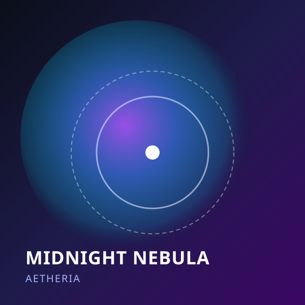
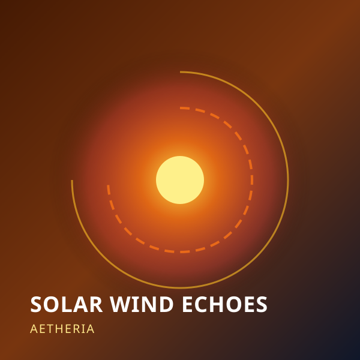
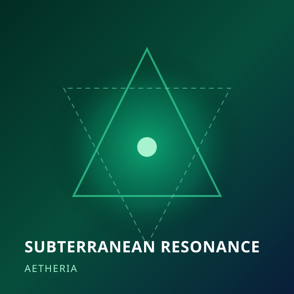
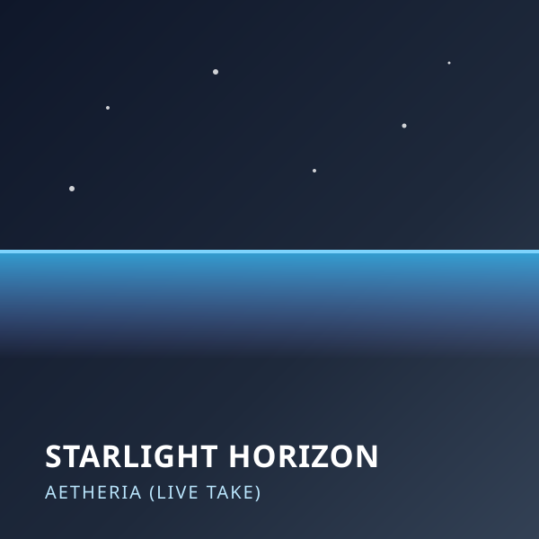

#track-001General

Midnight Nebula
By Aetheria
Deep synth pads layered with subtle vinyl crackle and distant celestial ambient echoes. Designed for night reading and deep focus.
4:1290 BPMFLAC / Lossless

Deep synth pads layered with subtle vinyl crackle and distant celestial ambient echoes. Designed for night reading and deep focus.

Ethereal arpeggiated frequencies swirling over sub-bass textures. Evokes a feeling of weightlessness in open space.

Experimental analog drone soundscape recorded with modular synthesizer feedback loops and sub-bass resonance.

Raw unedited live session recorded at Nocturne Studio, featuring warm analog tape saturation and soft electric piano harmonics.